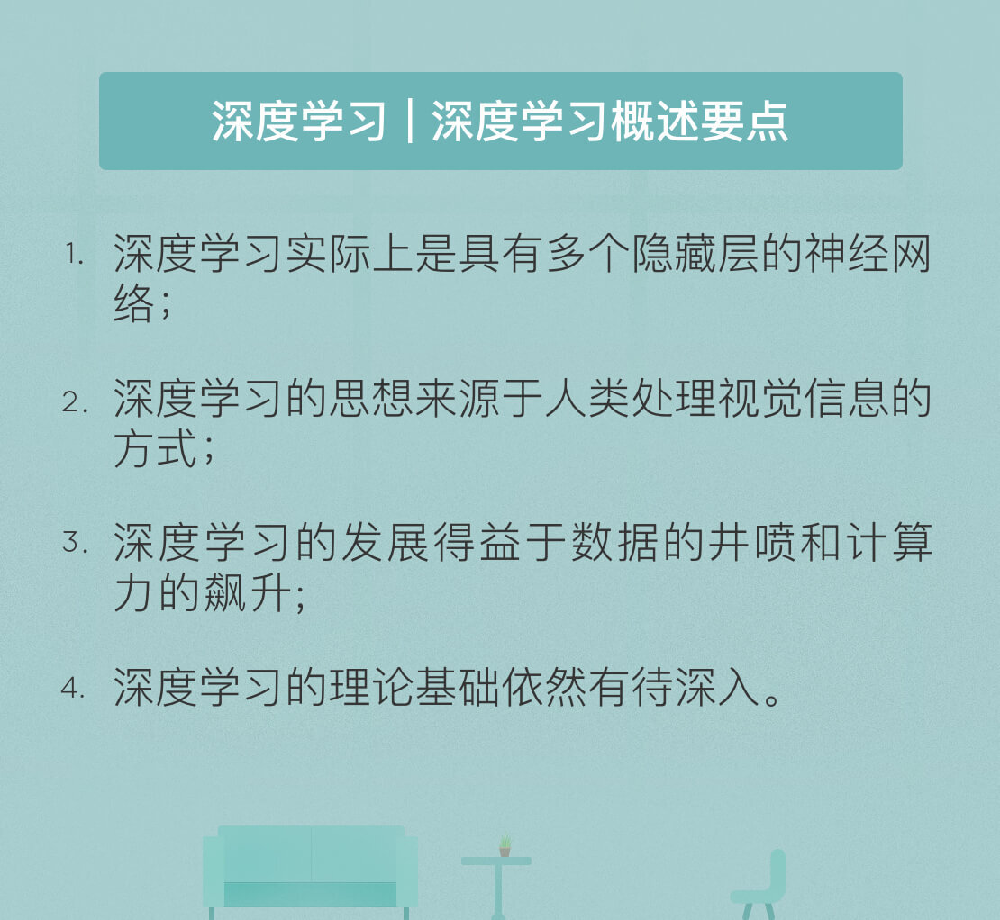

- 00 开篇词 人工智能：新时代的必修课.md
- 01 数学基础 九层之台，起于累土：线性代数.md
- 02 数学基础 月有阴晴圆缺，此事古难全：概率论.md
- 03 数学基础 窥一斑而知全豹：数理统计.md
- 04 数学基础 不畏浮云遮望眼：最优化方法.md
- 05 数学基础 万物皆数，信息亦然：信息论.md
- 06 数学基础 明日黄花迹难寻：形式逻辑.md
- 07 机器学习 数山有路，学海无涯：机器学习概论.md
- 08 机器学习 简约而不简单：线性回归.md
- 09 机器学习 大道至简：朴素贝叶斯方法.md
- 10 机器学习 衍化至繁：逻辑回归.md
- 11 机器学习 步步为营，有章可循：决策树.md
- 12 机器学习 穷则变，变则通：支持向量机.md
- 13 机器学习 三个臭皮匠，赛过诸葛亮：集成学习.md
- 14 机器学习 物以类聚，人以群分：聚类分析.md
- 15 机器学习 好钢用在刀刃上：降维学习.md
- 16 人工神经网络 道法自然，久藏玄冥：神经网络的生理学背景.md
- 17 人工神经网络 一个青年才俊的意外死亡：神经元与感知器.md
- 18 人工神经网络 左手信号，右手误差：多层感知器.md
- 19 人工神经网络 各人自扫门前雪：径向基函数神经网络.md
- 20 人工神经网络 看不见的手：自组织特征映射.md
- 21 人工神经网络 水无至清，人莫至察：模糊神经网络.md
- 22 深度学习 空山鸣响，静水流深：深度学习概述.md
- 23 深度学习 前方有路，未来可期：深度前馈网络.md
- 24 深度学习 小树不修不直溜：深度学习中的正则化.md
- 25 深度学习 玉不琢不成器：深度学习中的优化.md
- 26 深度学习 空竹里的秘密：自编码器.md
- 27 深度学习 困知勉行者勇：深度强化学习.md
- 28 深度学习框架下的神经网络 枯木逢春：深度信念网络.md
- 29 深度学习框架下的神经网络 见微知著：卷积神经网络.md
- 30 深度学习框架下的神经网络 昨日重现：循环神经网络.md
- 31 深度学习框架下的神经网络 左右互搏：生成式对抗网络.md
- 32 深度学习框架下的神经网络 三重门：长短期记忆网络.md
- 33 深度学习之外的人工智能 一图胜千言：概率图模型.md
- 34 深度学习之外的人工智能 乌合之众的逆袭：集群智能.md
- 35 深度学习之外的人工智能 授人以鱼不如授人以渔：迁移学习.md
- 36 深度学习之外的人工智能 滴水藏海：知识图谱.md
- 37 应用场景 你是我的眼：计算机视觉.md
- 38 应用场景 嘿, Siri：语音处理.md
- 39 应用场景 心有灵犀一点通：对话系统.md
- 40 应用场景 数字巴别塔：机器翻译.md
- 一键到达 人工神经网络复习课.md
- 一键到达 应用场景复习课.md
- 一键到达 数学基础复习课.md
- 一键到达 机器学习复习课.md
- 一键到达 深度学习之外的人工智能复习课.md
- 一键到达 深度学习复习课.md
- 一键到达 深度学习框架下的神经网络复习课.md
- 推荐阅读 我与人工智能的故事.md
- 新书 《裂变：秒懂人工智能的基础课》.md
- 直播回顾 机器学习必备的数学基础.md
- 第2季回归 这次我们来聊聊机器学习.md
- 结课 溯洄从之，道阻且长.md
- 课外谈 “人工智能基础课”之二三闲话.md
- （课外辅导）人工神经网络 拓展阅读参考书.md
- （课外辅导）数学基础 拓展阅读参考书.md
- （课外辅导）机器学习 拓展阅读参考书.md
- （课外辅导）深度学习 拓展阅读参考书.md
22 深度学习 空山鸣响，静水流深：深度学习概述
多年以后，面对李世石与AlphaGo的厮杀，加里·卡斯帕罗夫将会回想起，与深蓝对弈的那个遥远的下午。彼时的对手是一个庞大的超级计算机，记下变化多端的开局，以固定的逻辑决策应对中局，穷极所有可能性筛选残局。人工智能蹒跚学步之时，许多概念尚且是空中楼阁，计算机能够战胜优秀的人类围棋选手，这样的想法不啻于天方夜谭。
棋类游戏的核心在于根据棋局判断下一手的最优下法，深蓝通过穷举的方法在国际象棋的棋局中解决了这个问题。在64格的国际象棋棋盘上，深蓝的运算能力决定了它能算出12手棋之后的局面下的最优解，而身为人类棋手执牛耳者的卡斯帕罗夫最多只能算出10手棋，多出来的两手棋就会成为左右战局的关键因素。
深蓝的核心在于“算”：利用强大的计算资源来优化目标函数。深蓝本身就是一套专用于国际象棋的硬件，大部分逻辑规则是以特定的象棋芯片电路实现，辅以较少量负责调度与实现高阶功能的软件代码。其算法的核心是暴力穷举：生成所有可能的下法，然后执行尽可能深的搜索，并不断对局面进行评估，尝试找出最佳的一手。
可在围棋棋盘上，可以落子的点数达到了361个。别说12手棋，就是6手棋的运算量都已经接近于天文数字！这使得计算机相对于人脑的运算优势变得微不足道，走出优于人类棋手的妙手的概率也微乎其微，这也是为什么计算机会在围棋领域被看衰的原因。
围棋的棋盘状态远比国际象棋复杂，以穷举法进行最优落子策略的推演无异于痴人说梦。事实上，顶级的围棋棋手更多地依赖模糊的直觉来评判特定的棋盘状态的好坏。但理性推演与感性判断之间似乎存在着不可逾越的巨大鸿沟，尤其是对于计算机程序而言，依赖直觉是不可能的事情。因此并没有显而易见的方式来将国际象棋领域的成功复制到围棋上，直到AlphaGo的横空出世。
与深蓝相比，AlphaGo的核心则在于“想”。与专用硬件深蓝不同，AlphaGo是一套能够运行在通用硬件之上的纯软件程序。它汲取了人类棋手海量的棋谱数据，并依赖人工神经网络和深度学习技术从这些数据中学会了预测人类棋手在任意的棋盘状态下走子的概率，模拟了以人类棋手的思维方式对棋局进行思考的过程。
与深蓝的区别正是AlphaGo的突破之处。早期的计算机就已经被用来搜索优化已有函数的方式，深蓝的特点仅仅在于搜索的目标是优化尽管复杂但是形式大多数由已有的国际象棋知识表达的函数，其思想与人工智能早期的多数程序并无二致。而在整个算法中，除了“获胜”这个概念，AlphaGo对于围棋规则一无所知，更遑论定式等围棋的高级专门概念了。
这也是AlphaGo和深蓝的本质区别。同是战胜了棋类世界冠军，深蓝仍然是专注于国际象棋的、以暴力穷举为基础的专用人工智能；AlphaGo是几乎没有特定领域知识的、基于机器学习的、更加通用的人工智能。
但AlphaGo的故事还远没有结束，2017年10月，其升级版AlphaGo Zero诞生。自学成才AlphaGo Zero完全抛弃了来自棋谱数据的人类经验，而是通过左右互搏（自己和自己对弈）迅速提升棋力，在AlphaGo的基础上青出于蓝。放在人类世界里，这就如一个从没上过学的学霸靠自己刷题复习，刷了一个月就拿到高考状元般不可思议。
可仅仅一个月后，DeepMind又推出了AlphaGo Zero的升级版：AlphaZero。AlphaZero一不需要人工特征，二不需要棋谱知识，三不需要特定优化，可就是这个“三无”算法实现了对围棋、国际象棋和日本将棋的通吃，以摧枯拉朽之势横扫这些棋类游戏的顶级算法，再一次向世人展示了它的无穷潜力。
AlphaGo的胜利也是深度学习的胜利。深度学习是利用包含多个隐藏层的人工神经网络实现的学习。在介绍多层感知器时，我提到在原理上，两个隐藏层足以解决任何类型的非线性分类问题，因而浅层神经网络最多只会包含两个隐藏层。相比于浅层神经网络，正是这“多个”隐藏层给深度学习带来了无与伦比的优势。
在深度学习中，每个层可以对数据进行不同水平的抽象，层间的交互能够使较高层在较低层得到的特征基础上实现更加复杂的特征提取。不同层上特征的组合既能解决更加复杂的非线性问题，也能识别更加复杂的非线性模式。
与人工神经网络一样，深度学习的思想同样来源于生理学上的研究进展。1981年，两位神经生物学家大卫·胡贝尔和托尔斯滕·魏泽尔连同另一位科学家分享了诺贝尔医学奖，他们二位的主要贡献在于“发现了视觉系统的信息处理方式，即可视皮层是分级的”。
1958年，胡贝尔和魏泽尔在美国的约翰霍普金斯大学开展关于瞳孔区域与大脑皮层神经元对应关系的研究。他们给小猫展现形状和亮度各不相同的物体，并改变每个物体放置的位置与角度。在这一过程中，小猫的瞳孔感受不同类型和不同强度的刺激，小猫的后脑上则被插入电极，用来测量神经元的活跃程度。
这一实验的目的是验证一个假设：位于后脑皮层的不同视觉神经元与瞳孔感受到的刺激信号之间，存在某种相关性。一旦瞳孔受到某种特定的刺激，后脑皮层的某些特定神经元就会活跃。经过长期的实验，胡贝尔和魏泽尔发现了“方向选择性细胞”：当瞳孔发现了眼前物体的边缘，而且这个边缘指向某个方向时，这种神经元细胞就会活跃。这一发现不仅在生理学上具有里程碑式的意义，更是无心插柳地促成了人工智能在四十年后的突破性发展。
方向选择性细胞的发现表明，神经-中枢-大脑的工作过程，或许正是一个不断迭代、不断抽象的过程。人眼处理来自外界的视觉信息时，首先提取出目标物的边缘特性，再从边缘特性中提取出目标物的特征，最后将不同特征组合成相应的整体，进而准确地区分不同的物体。在这个过程中，高层特征是低层特征的组合，从低层到高层，特征变得越来越抽象，语义的表现就越来越清晰，对目标物的识别也就越来越精确。
深度学习正是受启于视觉系统的感受方式。在深度学习中，这个过程可以利用多个隐藏层进行模拟。第一个隐藏层学习到“边缘”的特征，第二个隐藏层学习到的是由“边缘”组成的“形状”的特征，第三个隐藏层学习到的是由“形状”组成的“图案”的特征，最后的隐藏层学习到的是由“图案”组成的“目标”的特征。当然，这样的识别思想不只适用于视觉信息的处理，对其他类型的信息同样适用。
虽然关于认知的理论早已成熟，但真正推动深度学习走到聚光灯下的还是工程上的两大进步，也就是数据的井喷和计算力的飙升。在目前的算法水平上，要提取出复杂的深层特征，必须要以大量训练样本为基础。简单的数据集只会让深度学习“消化不良”，因而大数据和深度学习的搭配称得上天作之合。
另一方面，多个隐藏层的使用引入了大量隐藏神经元，这使得深度神经网络的参数将以指数形式增加，给网络的训练带来沉重的计算负荷。而基于向量和矩阵计算的图形处理单元（graphical processing unit, GPU）完美解决了这一问题，其庞大的处理吞吐量能够使深度神经网络的训练显著提速，因而也成了深度学习的标配硬件。如果说深度学习是一台探矿机，大数据就是那座有待挖掘的金矿，计算能力的进展则为这台探矿机提供了源源不断的动力。
尽管取得了很多成果，但关于深度学习技术的争论正显出愈演愈烈的趋势，“深度学习是炼金术”的争议更是让不少大咖针锋相对，嘴仗打个不停。研究者批判深度学习的一个焦点在于其缺乏坚实的理论基础。在机器学习和浅层神经网络中，绝大部分最优解的最优性都是可以证明的。但在深度学习中，很多结果都是经验性而非理论性的，隐隐透出一丝看天吃饭的无力感。
抛开互怼的言论不论，深度学习在理论上依然有诸多要解决的问题，这也催生了“信息瓶颈”等新理论与新方法。目前看来，深度学习的背后深入的数学原理仍处在隐藏层中，我们唯一能够确定的是关于深度学习的研究依然任重道远。
今天我和你分享了深度学习的一些简介，其要点如下：
- 深度学习实际上是基于具有多个隐藏层的神经网络的学习；
- 深度学习的思想来源于人类处理视觉信息的方式；
- 深度学习的发展得益于数据的井喷和计算力的飙升；
- 深度学习的理论基础依然有待深入。
深度学习的理论问题已经成为人工智能讨论中的一个焦点。那我们到底是不管三七二十一，只需要享受深度学习方法所带来的红利；还是打破砂锅问到底，把背后的道理分析得水落石出呢？
欢迎发表你的观点。

© 2019 - 2023 Liangliang Lee. Powered by gin and hexo-theme-book.